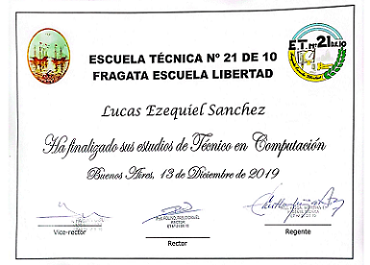
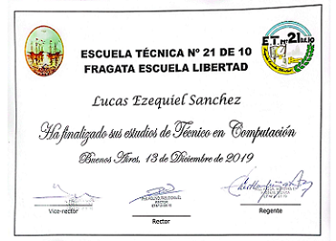

| PYTHON |
Calculadora Console |
Es un Proyecto en el que el usuario interactúa con el programa donde inicialmente se le pregunta el nombre, después si quiere guardar en un historial las operaciones que vaya realizando en la misma y por ultimo el menú. Aceptando o no el guardado la calculadora se puede utilizar de todas formas. Este "Historial" que menciono es una base de datos MongoDB que yo creé. En caso que el usuario diga sí, se activará a través de una función la conexión a la base de Datos para guardar dicha información de cada operación. [Ver Código Aquí]
|
Formularios Console |
Es un Proyecto en el que el usuario interactúa con el programa donde se le presenta un Menú de formularios(A-B-C), una vez completado cuyo formulario aparecerá el "completado" es su respectivo lugar en caso de brindar información errónea surjira un error y preguntará si quiere volver a intentar o salir del programa. Una vez completado los 3 formularios el programa detectará cuando los 3 formularios estén completados además preguntará si quiere resetear dichos formularios y almacenar esta información en una BD que yo creé en MongoDB.[Ver Código Aquí]
|
 
